Daniel Dahlström
Mina sajter, projekt och sociala kanaler.
opengym.semopeddelar.se
peyya.dev
Boka ett möte med mig
Hitta mig på Facebook
Chatta på Messenger
danadalis
peyyadotdev
Snapchat
Spotify

ThreadsMejla mig
Skicka mig ett sms
Mina sajter, projekt och sociala kanaler.
opengym.se
Threads